街角の う・ふ・ふ
= 番外編 =
フォトストーリー3について
マイクロソフトの フォトストーリー3 についてリポートします。
静止画像でもスライドショーに仕上げてBGMを加えると 見違えるようなアルバムを作ることが出来ますが， 静止画像を動画に変換するという発想のなかった私にとって， フォトストーリー3はびっくりソフトでした。
このソフトは複数の静止画に対してパンやズームなどの様々なアニメーション効果を施し 動画に変換して，Windows Media Video (WMV) ファイルを出力します。
初期画面
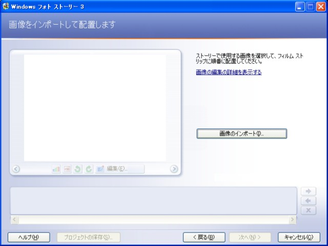
オートマチックモード
もっとも単純な構成でフォトストーリーを作成するには， ストーリー化したい画像をインポートして， [次へ] のボタンを押し続けることで（といっても5回ですが）， アルバム（ストーリー）作成が始まります。
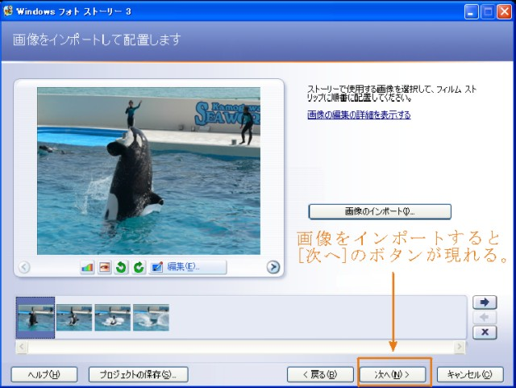
[次へ]ボタンを押し続けるとストーリーの作成が開始される
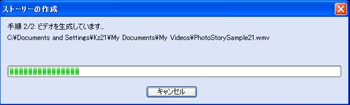
画像の切り替え効果や1枚の画像内でのパンやズームなどのアニメーション化が 自動で行われ，Windows media Video (WMV) が出力されます。 メディアプレーヤーで結果を見ると驚くべき仕上がりになっていると思います。 アニメーション化がとても自然なのです。
ここをクリックすると上記の操作で出力されたサンプルがご覧頂けます
アニメ化ではある程度画像を解析しているようで，画像の中心に人物が配置されているときなどは， 人物に向かってズームアップして行きます。 更に前後の画像の関係も考慮されているようです。
マニュアルモード
マニュアルでどのような調整や効果が加えられるのか行程順に列記すると 以下のようになります。
[1] タイトルの追加
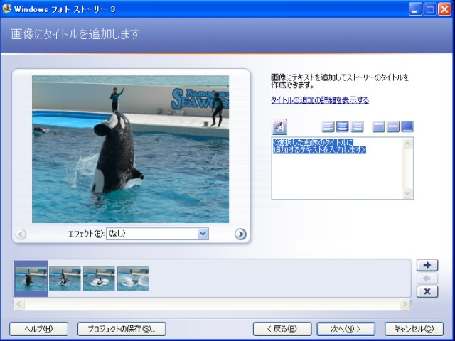
タイトル追加欄に文字を入力すると表示されている画像に結果が反映されます。
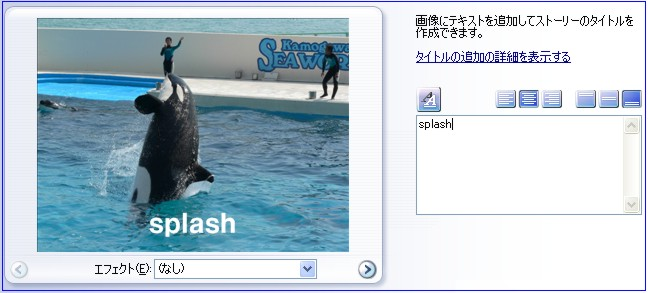
[2] ナレーションの追加とアニメーションのカスタマイズ
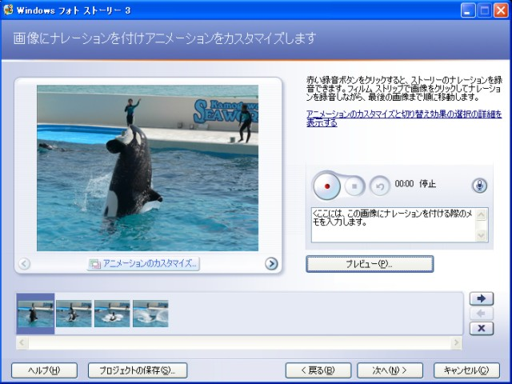
[3] BGMの追加
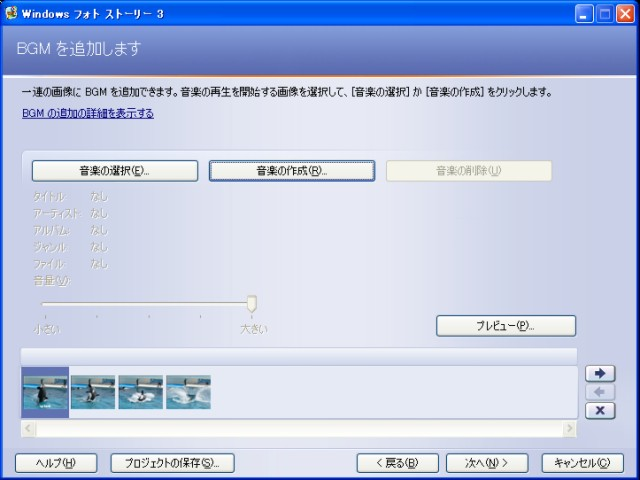
[4] ストーリーの保存
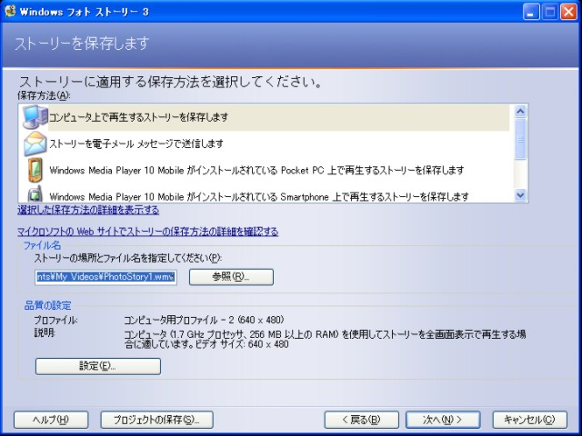
行程の中で重要なのは以下の2点だと思います。
アニメーションのカスタマイズ
BGMの追加
** アニメーションのカスタマイズ **
[2] ナレーションの追加とアニメーションのカスタマイズ の処理画面から[プレビュー]ボタンが表示されるようになり， 調整の効果を確認出来るようになります。
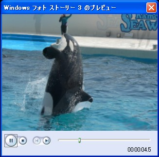
アニメーションのカスタマイズではパンやズーム，その処理時間を マニュアルで調整することが出来ます。
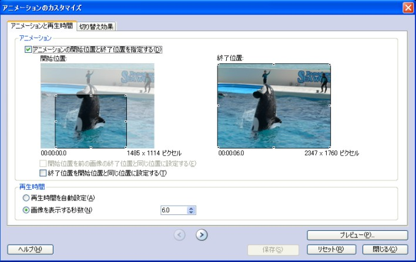
この部分の処理は自動でも素晴らしい出来栄えであることは前述の通りですが， 似たような画像が続くとズームアウトが続いたりして， プレビュー画面で確認するとちぐはぐな動きになっている場合があります。 このような場合はマニュアルで調整しながらプレビュー画面で確認することで， 大体思い通りの結果を得ることが出来ます。
また，アニメーションのカスタマイズ画面で， 画像切り替えの効果をマニュアルで指定することも出来ます。 デフォルトではフェードアウトが指定されていますが， がらっと画面が変わるときなどは，マニュアルで指定することで， 雰囲気を変えることが出来ます。
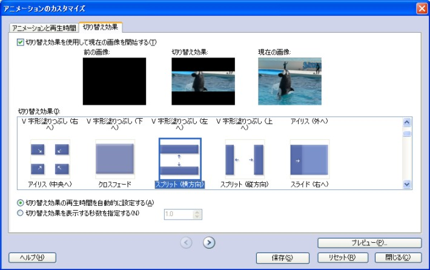
** BGMの追加 **
BGMの追加 では，mp3やwavなどの既存のデータを使うことは勿論， フォトストーリー3に付属している音楽の作成機能を利用して 画像の内容に合わせた曲をその場で作成することも出来ます。
私自身はこの音楽の作成機能を使いこなせていませんが， 相当に強力なツールであることは確かです。
ところで，BGMを加えてからのプレビューは かなりマシンパワーに依存するようです (注)。
** ストーリーの保存 **
仕上がった作品の保存方法も重要ですので，簡単に説明視します。
ストーリーの保存 では最終的に使用する環境に合わせて 様々な解像度でのプロファイルが用意されています。 デフォルトではパソコンでの再生を前提とした640x480ピクセルで出力されます。 マシンスペックが高ければ1024x768ピクセルまで指定可能です。
[設定]ボタンを押してプロファイルのメニューを表示させた状態
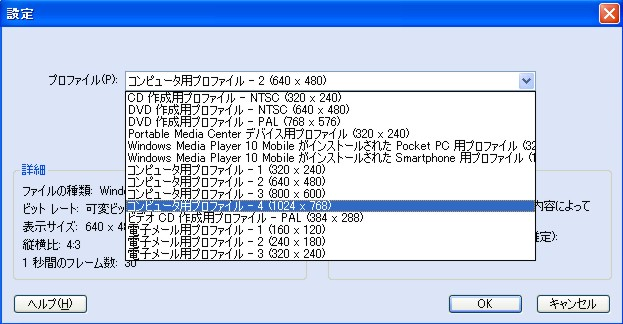
出力フォーマットがWMVなので，DVD-Videoに変換してDVD-Rなどにコピーすれば， 一般のTVで作品を鑑賞することも出来るようになります。 ただし，WMVからDVD-Videoへの変換はフォトストーリー3ではサポートしていないので， 変換用のソフトが必要になります。 私は，PC内蔵用DVDプレーヤーに添付されていたツールを使用しています。
なお，初期画面以外の各行程の画面左下に [プロジェクトの保存] というボタンが 表示されています。 このボタンを押すことでその時点までに行った作業を全て保存することが出来ます。 ファイル名を指定して保存すると "wp3" という拡張子のファイルが出力されます。 割と大きなサイズのファイルなのですが，インポートした画像データから音楽データまで 全てのデータを元のサイズのまま含んでいるようです。 従って，このファイルをコピーすれば，別のマシンでその後の作業を続けることが可能です。
私にとって謎の部分
さて，フォトストーリーではなんと保存用のプロファイルに 「DVD作成用プロファイル-NTSC(640x480)」というモードがあります。 これで保存してDVD-Videoに変換すれば，テレビ画面で素晴らしい映像を満喫出来る..... そう思ったのですが，これは私の環境ではバツでした (^^;。
出力されたWMVファイルを直接メディアプレーヤーで再生すると かなりピンボケの映像が再生されます。 しかし，DVD-Videoに変換してTV画面で再生すれば違った展開になるのではないかと 試してみましたが，やはりピンボケはピンボケのままでした。
逆に，デフォルトのプロファイル「コンピューター用プロファイル-2(640x480)」で出力した WMVファイルをDVD-Videoに変換した方が数段クリアな映像になります。 この辺りは，私の操作方法に問題があるのかもしれませんが， ちょっと謎の部分です。
捕捉
Pentium4 2.8G メモリー1Gのマシン（マシンA）と Pentium4 1.9G メモリー768Mのマシン（マシンB）とで 画像サイズが2560x1920pixelなどの高解像度で枚数が100枚を越える （フォトストーリー3で扱える画像は300枚まで）作品を作ろうとした場合のプレビューについて， 気づいたことをまとめてみます。
アニメーションのカスタマイズ終了時点ではマシンA，マシンBとも 問題なくプレビューが行えます。
BGMを追加してプレビューを行うと マシンAは全く問題ないのですが，マシンBの挙動が不安定になります。 まず，プレビュー画面がなかなか起動しなくなります。 起動しても映像と音声が同期しません。 プレビューを終了させようとしても終了しなくなります (^_^;。
フォトストーリー3で静止画をどの程度処理できるかは 使用するマシンのスペックに合わせてある程度思考錯誤が必要だと思います。